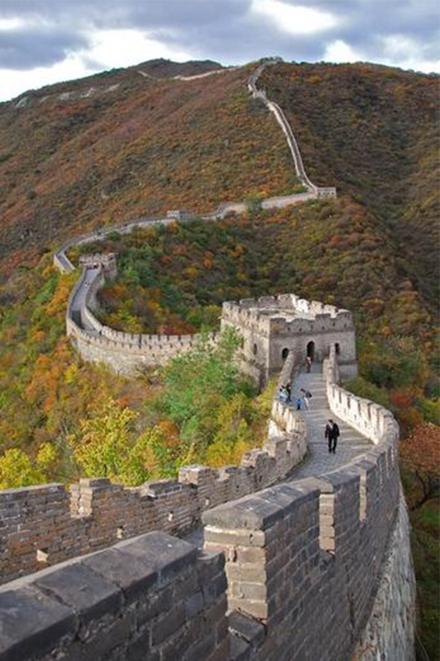

China
El Pais mas rico del mundo
Descripción:
La gran historia de China cuenta con un gran muro, una ciudad prohibida y unos miles de guerreros de terracota. Algunos de los paisajes incluyen el horizonte de ciencia ficción de Shanghái, los picos sobresalientes de Zhangjiajie y las playas tropicales de Hainan, pero la historia de este reino antiguo comenzó hace mucho tiempo.
La arquitectura tradicional china está influida por el arte grecobudista del siglo I . Son construcciones generalmente de madera y ladrillo. Las columnas suelen tener una altura baja y carecen de capitel. Las cubiertas cuentan con aleros gruesos y encorvados ligeramente hacia arriba. Además, se usan variadas decoraciones policromadas, con gran variedad de detalles.
La gastronomía china es muy diversa, y se desarrolló a lo largo de milenios de historia culinaria. El alimento básico de China es el arroz . El cerdo es la carne más consumida en el país, que supone las tres cuartas partes del total de carne. Las especias juegan un papel central en la cocina china.